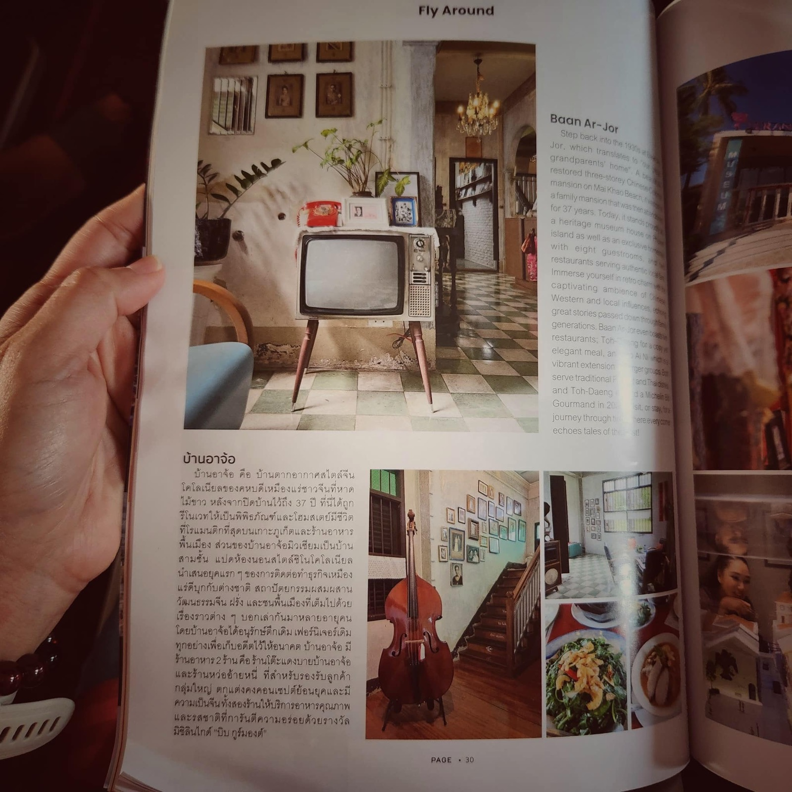
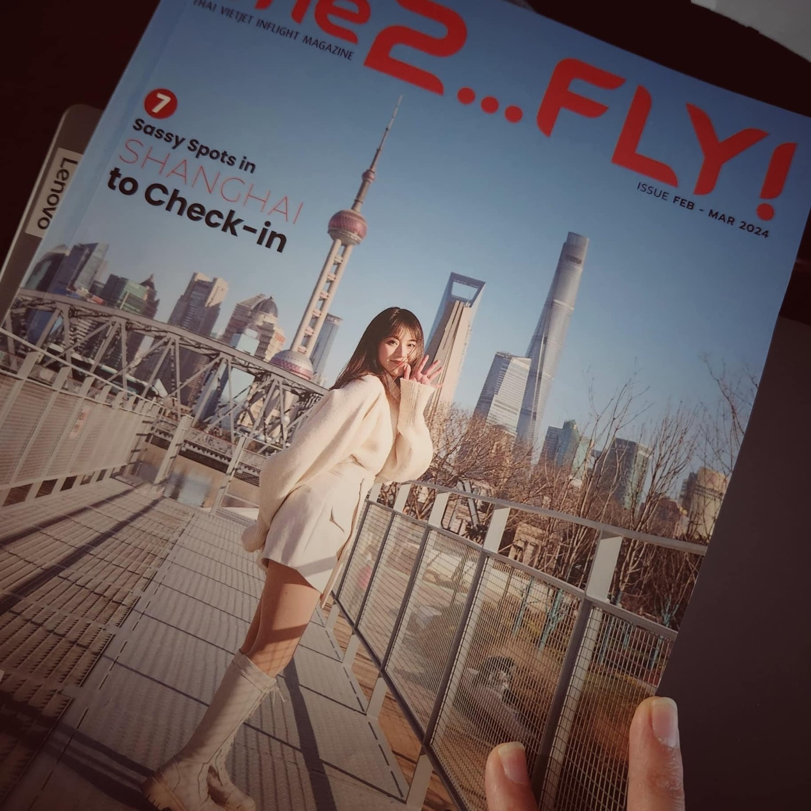

2024 · press · event
Baan Ar-Jor in an in-flight magazine, picked as a Phuket destination


Original text in Thai
นิตยสาร #one2fly #vietjetair ❤️
แต๊งเพื่อน Pimpa Phitya-isarakul ขึ้นเครื่องแล้วเจอบ้านอาจ้อในนิตยสาร 🥰 ดีใจที่บ้านอาจ้อได้ถูกเลือกเป็น destination สำหรับ นทท ทั้งพิพิธภัณฑ์ และร้านอาหาร #michelinBIB 😋✨
ลงเครื่องอย่าลืมแวะมาบ้านอาจ้อน้าาา ทีมงานตั้งใจพัฒนาในทุกๆวัน ให้เพื่อนๆ ที่มาเที่ยวได้ happy เก็บเกี่ยวความสุขกลับบ้านกันนน 😇
#phuket 📌
#บ้านอาจ้อ ❤️